GitHub Configuration
GitHub Classroom will allow you to easily create your own private forks of the provided skeleton code for the BigShell assignment. You can then work on your BigShell assignment directly in your web browser, using the GitHub codespaces IDE, in your favorite local editor, or on the class os1 server.
Warning
We cannot guarantee that code which compiles and runs correctly on your local system, os1, or on a GitHub codespace, will also compile and run identically in the Gradescope testing environment. I personally have not found any differences between my own local environment, os1, and GitHub codespaces. However, bugs related to undefined behavior (e.g. indexing past the end of an array, using uninitialized variables) may have different effects in different contexts. Please test your code on Gradescope regularly, since that is where your grade is assigned.
In order to use GitHub classroom, you will need to have a GitHub Account. You can create an account here.
Later in the course, I will give you a link to the GitHub classroom assignment for BigShell. Clicking one of this link will prompt you to accept the assignment, which will create a new private repository in the Classroom environment that only you and instructors can access.
GitHub Codespace
Once you have forked the repository, you can work on the project directly in your browser by setting up a Codespace. See the following screenshots for how to create a Codespace for a repository:
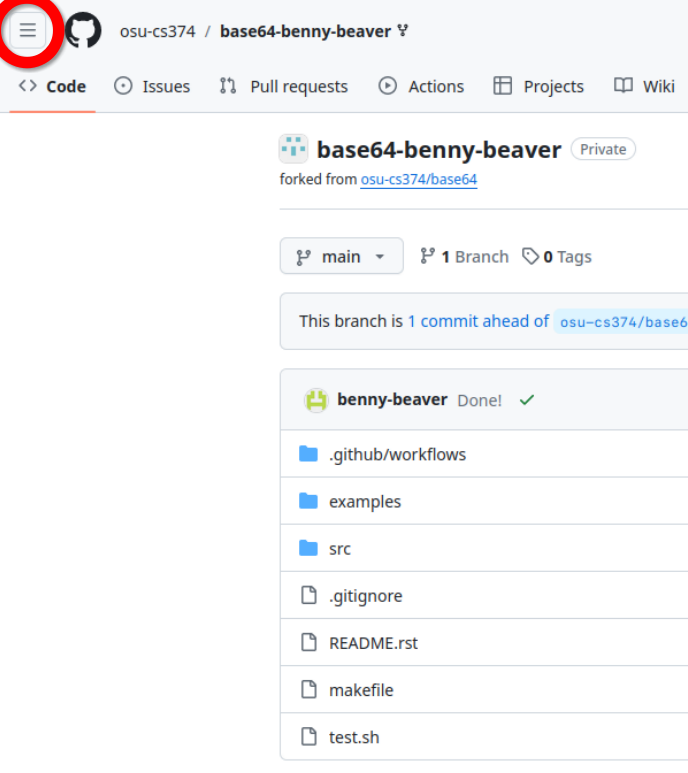 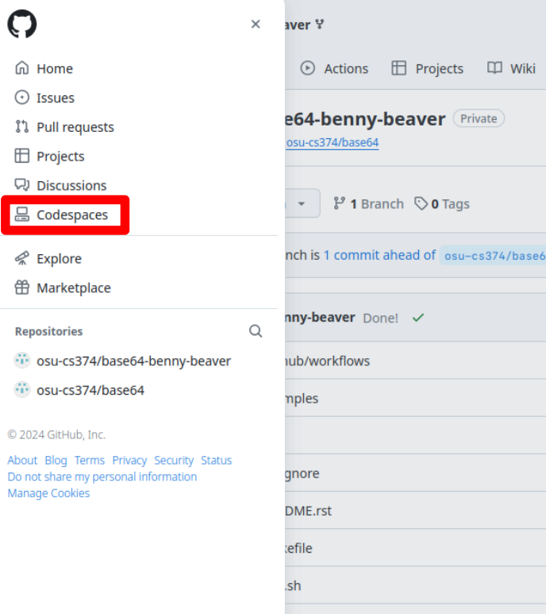 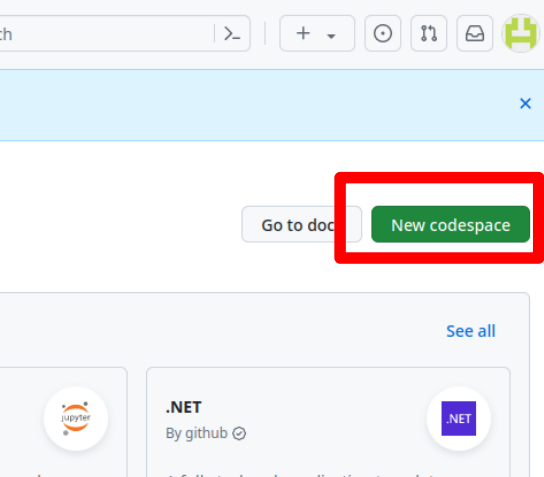 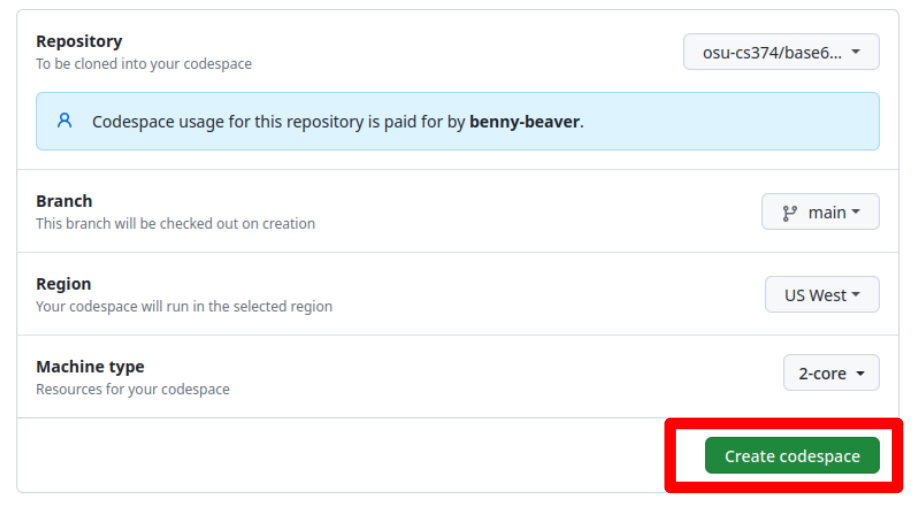 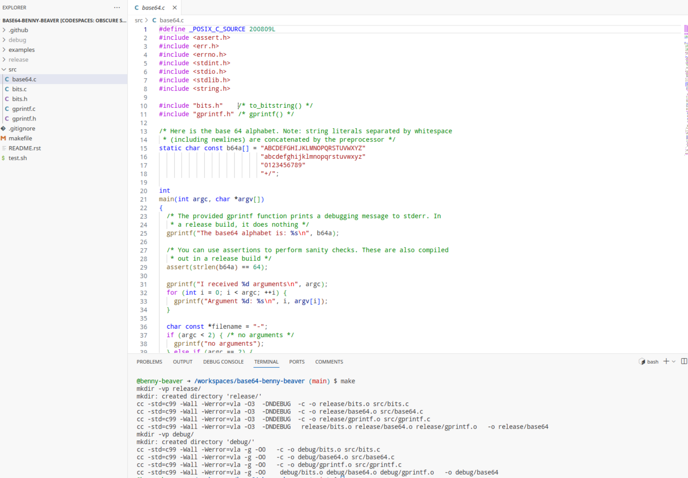{kind=link}
{kind=link}
{kind=link}
{kind=link}
{kind=link}
Working on os1
If you prefer to try working on os1, or want both set ups ready to go, follow the steps below. These instructions also apply generally for a local system running MacOS or Linux–you may need to install requisite software like git.
First, you need to create a public/private key pair on os1, so go ahead and log into os1 and run the $ ssh-keygen -t ed25519 command that you used on your local machine when doing the SSH setup earlier in the course. You will use this generated key to pull/push to GitHub.
Register this key with GitHub, following these steps:
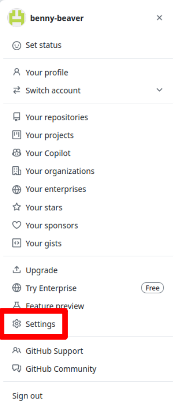 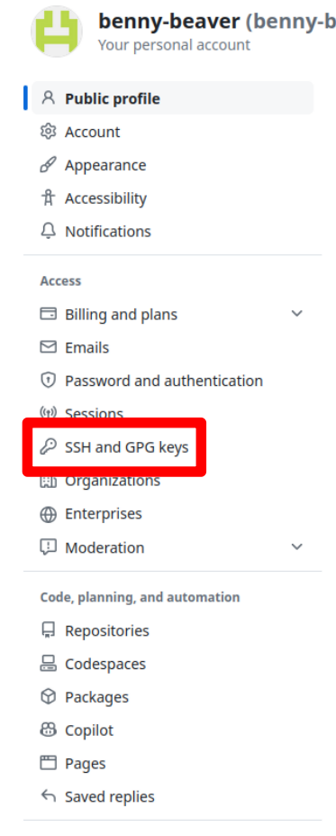 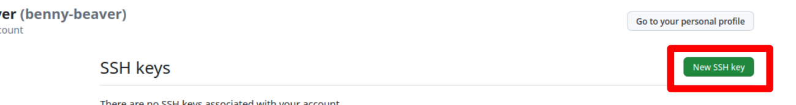 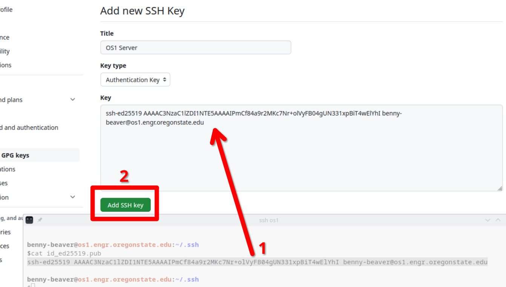{kind=link}
{kind=link}
{kind=link}
{kind=link}
Next, go to your repository for the assignment and copy the SSH URL of your repository:
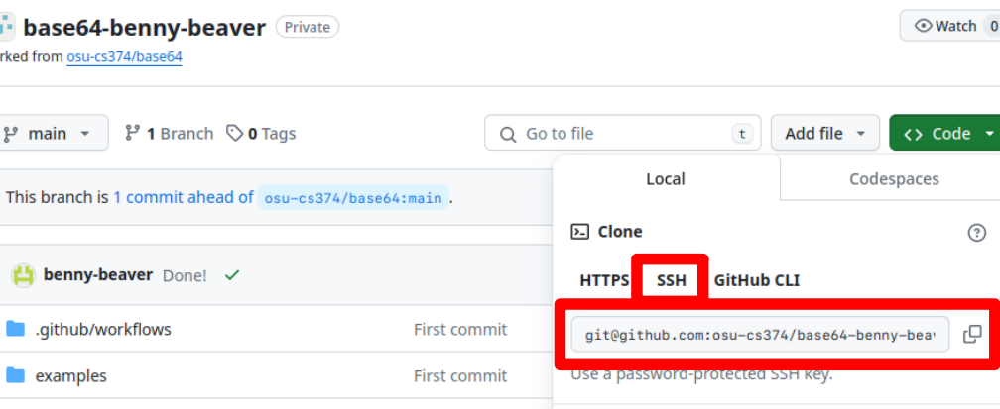{kind=link}
On os1, run the $ git clone command with the repository URL,
benny-beaver@os1.engr.oregonstate.edu:~/
$ git clone git@github.com:osu-cs374/BigShell-benny-beaver.git BigShell
Cloning into 'BigShell'...
remote: Enumerating objects: 25, done.
remote: Counting objects: 100% (13/13), done.
remote: Compressing objects: 100% (8/8), done.
remote: Total 25 (delta 3), reused 13 (delta 3), pack-reused 12
Receiving objects: 100% (25/25), 9.13 KiB | 1.30 MiB/s, done.
Resolving deltas: 100% (3/3), done.
benny-beaver@os1.engr.oregonstate.edu:~/
$ cd BigShell
benny-beaver@os1.engr.oregonstate.edu:~/BigShell
$ make
[...]
From here you can work on the assignment. To commit your changes, first you need to add any modified files to the commit. To see a list of your modified files, use $ git status. You can stage files with $ git add path/to/file, or you can just simply do $ git add -A to add all modified files. Then, you can write a commit with $ git commit, and push your changes to the remote repository on GitHub with $ git push:
benny-beaver@os1.engr.oregonstate.edu:~/BigShell
$vim src/BigShell.c
benny-beaver@os1.engr.oregonstate.edu:~/BigShell
$git status
On branch main
Your branch is up to date with 'origin/main'.
Changes not staged for commit:
(use "git add <file>..." to update what will be committed)
(use "git restore <file>..." to discard changes in working directory)
modified: src/BigShell.c
no changes added to commit (use "git add" and/or "git commit -a")
benny-beaver@os1.engr.oregonstate.edu:~/BigShell
$git add -A
benny-beaver@os1.engr.oregonstate.edu:~/BigShell
$git commit -m "Bug Fix"
[main e7ec72b] Bug Fix
1 file changed, 2 insertions(+)
benny-beaver@os1.engr.oregonstate.edu:~/BigShell
$git push
Enumerating objects: 7, done.
Counting objects: 100% (7/7), done.
Delta compression using up to 96 threads
Compressing objects: 100% (4/4), done.
Writing objects: 100% (4/4), 373 bytes | 373.00 KiB/s, done.
Total 4 (delta 3), reused 0 (delta 0), pack-reused 0
remote: Resolving deltas: 100% (3/3), completed with 3 local objects.
To github.com:osu-cs374/BigShell.git
b382ea8..e7ec72b main -> main
Warning
Do not use the HTTPS address to clone your repository. GitHub long ago deprecated username and password authentication via the HTTPS links–these can now only be used to clone read-only copies of public repositories:
benny-beaver@os1.engr.oregonstate.edu:~/
$ git clone https://github.com/osu-cs374/BigShell-benny-beaver.git BigShell
Cloning into 'BigShell-benny-beaver'...
Username for 'https://github.com': benny-beaver
Password for 'https://benny-beaver@github.com': **************************
remote: Support for password authentication was removed on August 13, 2021.
remote: Please see https://docs.github.com/get-started/getting-started-with-git/about-remote-repositories#cloning-with-https-urls for information on currently recommended modes of authentication.
fatal: Authentication failed for 'https://github.com/osu-cs374/BigShell-benny-beaver.git/'
Submitting To Gradescope
After pushing your changes to your GitHub repository, you can submit it to Gradescope:
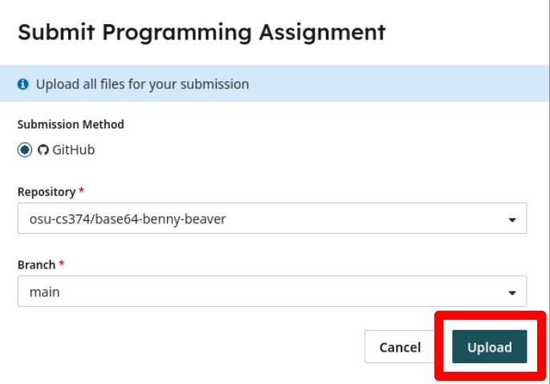{kind=link}